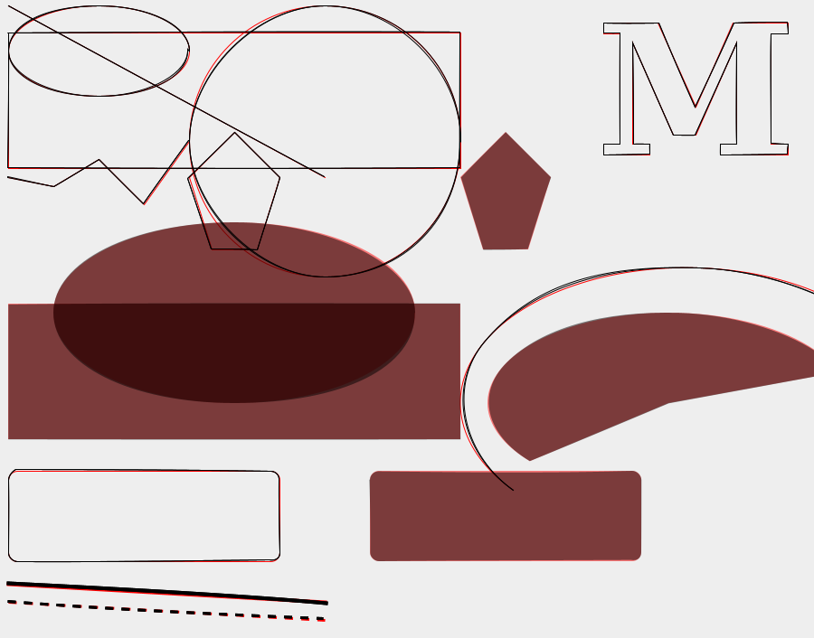
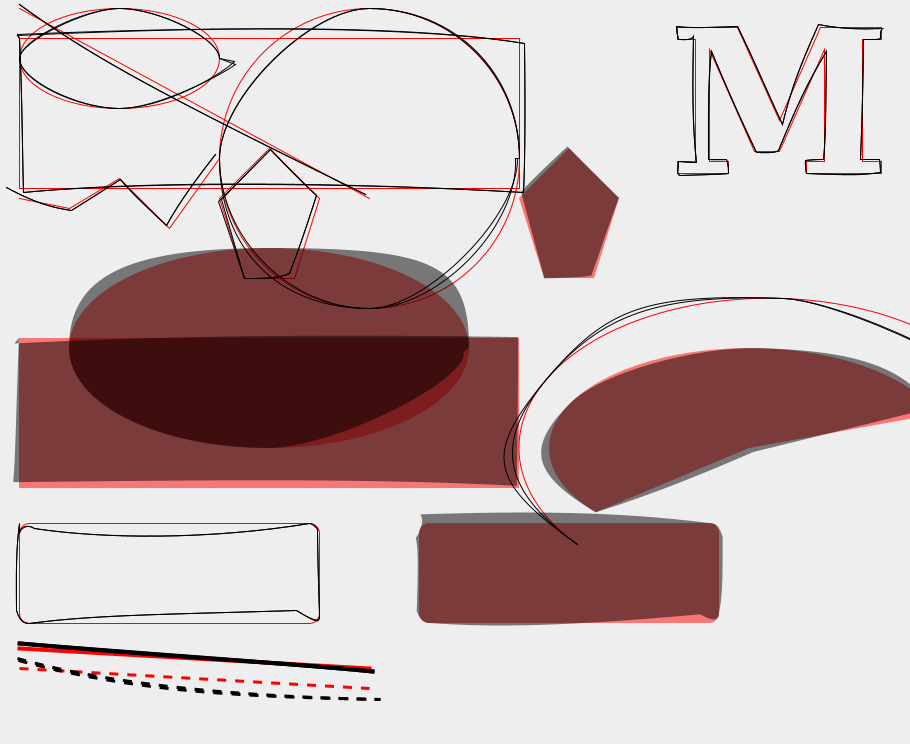
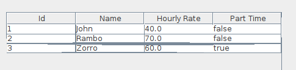
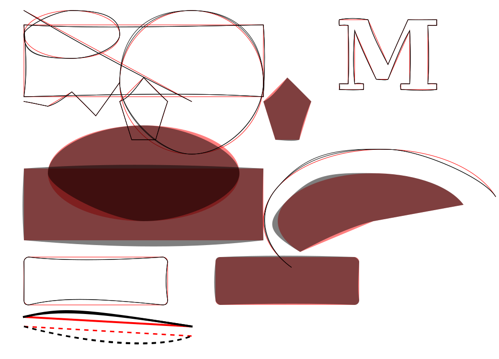

Entwurfsmodus für java.awt.Graphics2D

Es ist jetzt bereits einige Zeit vergangen seitdem ich über Versuche berichtet habe, den "Servietten-Look" wie bei SketchViz oder Rough.js auch in Java-Programmen zu erreichen. Letztes Mal berichtete ich über komplexe Strokes, mit denen sich so etwas realisieren ließe.
Ich habe dieses Projekt also jetzt im Urlaub nochmals hervorgeholt und versucht, eine Art Abschluss dafür zu finden. Das Ziel für dieses Mal war, einen transparenten Graphic-Context zu schaffen, in den man einfach zeichnen könnte wie in normalen Java-Programmen und der aus sich heraus den "handgemachten" Look erzeugen würde.
Dafür habe ich den Code aus einem der im letzten Versuch vorgestellten Strokes extrahiert und in eine Klasse gepackt, die von java.awt.Graphics2D abgeleitet wurde. Darin sind alle Methoden zum Zeichnen vom primitiven Graphikobjekten, die sich als Vektoren oder java.awt.Shape beschreiben lassen entsprechend überschrieben. Der Graphic-Context selbst ist so beschaffen, dass man die "Sloppiness" - also den Grad um den die Zeichnung von der jeweiligen präzisen Form abweicht - konfigurieren kann. Die einzigen Primitiven, die bisher nicht unterstützt werden sind 3D-Rechtecke.
Sowohl die Umrandung wie auch gefüllte Versionen der Primitiven werden unterstützt.
Außerdem ist noch anpassbar, ob die Form einmal oder - wie in manuellen Skizzen hin und wieder - leicht voneinander abweichend mehrfach gezeichnet werden soll. Ich zeige hier zwei Demonstrationen des Ergebnisses - rot sind die jeweiligen präzisen Darstellungen und überlagernd in schwarz die "sloppy" Versionen dargestellt. Bei gefüllten Versionen wurde die Deckkraft auf 50% abgesenkt um beide Versionen einfacher vergleichen zu können. Unten links sieht man, dass auch andere Strokes benutzt werden können - einmal ist ein dickerer Strich zu sehen, einmal ein unterbrochener.
Zunächst eine Version mit geringerer Sloppiness - also ein, deren Ergebnis näher am präzisen Original ist:

Verschiedene graphische Primitiven präzise (rot) und mit geringer Sloppiness (schwarz)Im Gegensatz dazu eine Version mit deutlich erhöhter Sloppiness:

Verschiedene graphische Primitiven präzise (rot) und mit höherer Sloppiness (schwarz)Man könnte jetzt fragen, ob sich dieser Graphics-Context auch für normale GUIs von Anwendungen einsetzen ließe (wer würde so etwas tun wollen?) - und man muss antworten: nein. Wie man im folgenden Screenshot sehen kann, sind die normalen Swing-Controls darauf ausgelegt, dass ihre Grundform Rechtecke mit geraden Kanten sind - sobald man diese in einem entsprechenden Canvas darstellt, was dazu führt, dass ihre Konturen eben keine solchen Rechtecke mehr sind werden die Kanten gnadenlos vom jeweiligen UI überzeichnet und verschwinden, so dass der visuelle Eindruck des Ergebnisses iom besten Falle fragwürdig erscheint:

Eine JTable mit dem neuen Graphic-Context dargestelltDie aktuelle Version dieses Experiments kann auf Gitlab eingesehen werden. Die wichtige Klasse ist dabei RoughGraphics.
Derzeit ist das eine Software im Status "final pre-alpha" - also auf gar keinen Fall zum Produktiveinsatz vorgesehen und selbst bei Einsatz im experimentellen Umfeld ist noch Vorsicht geboten!
Zur Illustration meiner Beweggründe der Implementierung des Verfahrens als transparenten java.awt.Graphics2D hier noch eine SVG-Graphik, die ich aus der oben gezeigten Demo erzeugt habe, indem ich den Inhalt des neuen RoughGraphics in einen SVG-Canvas aus dem Apache Batik Projekt ausgegeben habe:

Verschiedene graphische Primitiven direkt aus dem neuen RoughGraphics als SVGArtikel, die hierher verlinken
Entwurfsmodus für beliebige SVG Graphiken
01.06.2024
Nachdem ich in der Vergangenheit immer wieder Weiterentwicklungen der Idee vorgestellt habe, Graphiken mit dem Computer so zu ezeugen dass sie eine gewisse "handgemachte" Anmutung haben, habe ich nunmehr die durchschlagende Idee gehabt:
Graphics2D Implementierung für Java mit verlegtem Koordinatenursprung
01.05.2024
Es gibt seit vielen Jahren immer mal wieder Leute, die im Internet fragen, ob man in Javas diversen Methoden zum Zeichnen von Graphiken das Koordinatensystem so ändern könnte, dass sich der Koordinatenursprung links unten befindet und die positive y-Achse nach oben weist. Meist sind die Antworten dann, dass eine Affine Transformation eingeschaltet werden solle, die das Bild spiegelt.
Konstruktive Geometrie mit dem Computer
25.03.2024
Ich habe in einem vorhergehenden Artikel beschrieben, dass ich eine weitere neue Graphik-Primitive erstellt habe. Dabei musste ich mir meine verschütteten Trigonometrie-Kenntnisse wieder vor Augen führen - mit Bleistift und Papier. Das müsste doch auch anders gehen dachte ich mir und begann...
Gleichseitige Dreiecke mit abgerundeten Ecken für Java
09.03.2024
Ich habe - nach einer Inspiration aus dem Internet - wieder einmal eine neue Graphic-Primitive für Javas Graphics2D erstellt
Neue Graphik-Primitiven für java.awt.Graphics2D
18.03.2023
Ich wollte eine Methode schaffen, neue Graphik-Primitiven, die zumindest in java.awt.Graphics2D - in Java noch fehlen, zu ergänzen.
Schraffuren für java.awt.Graphics2D
12.03.2023
Ich wollte eine Methode schaffen, unterschiedlichste Schraffuren in beliebigen Shapes zu erzeugen. diese Möglichkeit fehlt - zumindest in java.awt.Graphics2D - in Java noch.


Vor 5 Jahren hier im Blog
-
CI/CD mit shellcheck
13.10.2019
Ich habe mich entschlossen, in meinen diversen Shell-Projekten shellcheck als Mittel zur Qualitätssicherung einzusetzen.
Weiterlesen...
Tags
Android Basteln C und C++ Chaos Datenbanken Docker dWb+ ESP Wifi Garten Geo Git(lab|hub) Go GUI Gui Hardware Java Jupyter Komponenten Links Linux Markdown Markup Music Numerik PKI-X.509-CA Python QBrowser Rants Raspi Revisited Security Software-Test sQLshell TeleGrafana Verschiedenes Video Virtualisierung Windows Upcoming...
Neueste Artikel
- Linux-System SBOM visualisiert als Graph
In meinem $dayjob kam neulich die Frage auf, ob es möglich wäre, die aktuelle Softwareinstallation eines Linux-Systems als Software Bill of Materials (SBOM) zu exportieren.
Weiterlesen... - Visualisierung von Datenmodellen als gerichtete Graphen
Ich habe - motiviert durch meine Experimente zur Visualisierung von Paketabhängigkeiten in Linux-Installationen als interaktive Graphen - versucht, relationale Datenmodelle in ähnlicher Form zu visualisieren und dazu zwei Plugins für die sQLshell geschrieben.
Weiterlesen... - Carl Sagan - Christmas Lectures at the Royal Institution
Die Royal Institution hat in ihren Schätzen gegraben und die Christmas Lectures von Carl Sagan auf Youtube nochmals veröffentlicht. Meiner Ansicht nach unbedingt lohnenswert für alle, die Englisch verstehen!
Weiterlesen...
Manche nennen es Blog, manche Web-Seite - ich schreibe hier hin und wieder über meine Erlebnisse, Rückschläge und Erleuchtungen bei meinen Hobbies.
Wer daran teilhaben und eventuell sogar davon profitieren möchte, muß damit leben, daß ich hin und wieder kleine Ausflüge in Bereiche mache, die nichts mit IT, Administration oder Softwareentwicklung zu tun haben.
Ich wünsche allen Lesern viel Spaß und hin und wieder einen kleinen AHA!-Effekt...
PS: Meine öffentlichen GitHub-Repositories findet man hier - meine öffentlichen GitLab-Repositories finden sich dagegen hier.